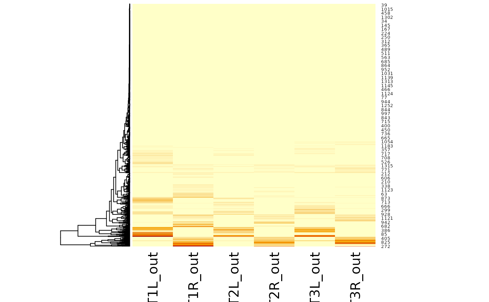

manc_leg_summary summarises I/O in the main leg
neuropils.
manc_side_summary summarises connections within all of
the ROIs that have an L or R designation.
manc_leg_summary(ids, long = FALSE, other = FALSE, conn = manc_neuprint())
manc_side_summary(ids, long = FALSE, conn = manc_neuprint())A set of body ids in any form understandable to
manc_ids
Whether to return results in wide (default) or long format.
Whether to return the sum of all other neuropils as an extra
column other.
Optional, a neuprint_connection object, which also
specifies the neuPrint server. Defaults to manc_neuprint() to
ensure that query is against the VNC dataset.
a data.frame with one row per neuron (when long=FALSE) or one
row per ROI/IO combination (when long=TRUE). Note that out
columns refer to output synapses from the given bodyid onto downstream partners.
dnals=manc_leg_summary(c(10126, 10118))
dnals
#> # A tibble: 2 × 13
#> bodyid T1L_in T1L_out T1R_in T1R_out T2L_in T2L_out T2R_in T2R_out T3L_in
#> <dbl> <int> <int> <int> <int> <int> <int> <int> <int> <int>
#> 1 10126 0 0 0 0 0 0 0 0 0
#> 2 10118 0 0 0 0 0 0 0 0 0
#> # ℹ 3 more variables: T3L_out <int>, T3R_in <int>, T3R_out <int>
manc_leg_summary(c(10126, 10118), long=TRUE)
#> Loading required namespace: tidyr
#> # A tibble: 24 × 5
#> bodyid weight soma_neuromere side polarity
#> <dbl> <int> <chr> <chr> <chr>
#> 1 10126 0 T1 L in
#> 2 10126 0 T1 L out
#> 3 10126 0 T1 R in
#> 4 10126 0 T1 R out
#> 5 10126 0 T2 L in
#> 6 10126 0 T2 L out
#> 7 10126 0 T2 R in
#> 8 10126 0 T2 R out
#> 9 10126 0 T3 L in
#> 10 10126 0 T3 L out
#> # ℹ 14 more rows
heatmap(data.matrix(dnals[grep("_out", colnames(dnals))]),
Colv = NA, scale = 'none')
# \donttest{
dnls=manc_leg_summary('class:Descending')
heatmap(data.matrix(dnls[grep("_out", colnames(dnls))]),
Colv = NA, scale = 'none')

# }
manc_side_summary('DNp01')
#> bodyid L_in L_out R_in R_out
#> 1 10000 0 0 96 273
#> 2 10002 86 56 0 0